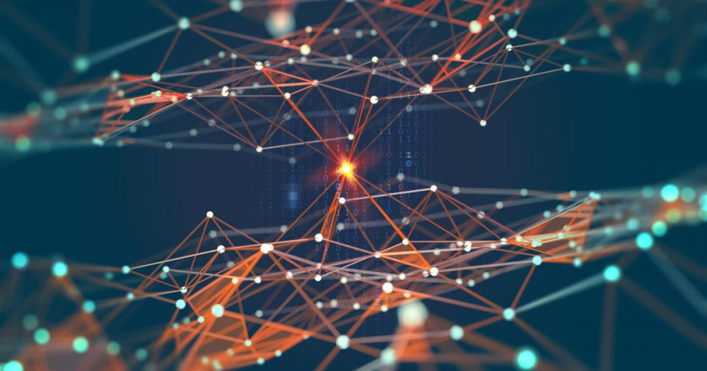
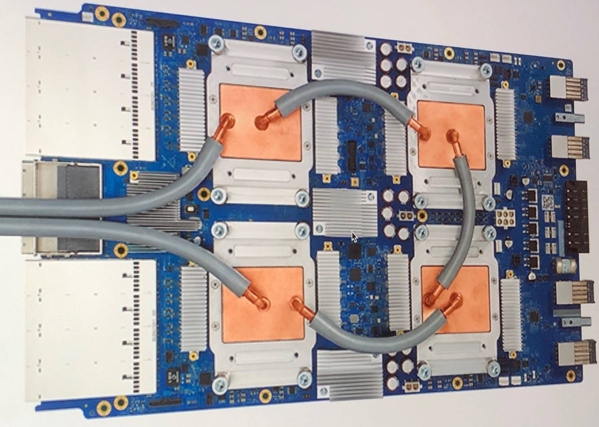

Жизнь искуственного интеллекта и человека в одном мире.
Искусственный интеллект — одна из самых захватывающих тем фантастики XX века — делает невероятные успехи. Мы постоянно используем ИИ в повседневной жизни, зачастую сами того не подозревая. Тем не менее и сегодня искусственный разум не сходит со страниц фантастических романов и экранов кинотеатров. Кто-то из авторов рисует страшные картины порабощенного машиной человечества, а другие, напротив, видят в ИИ верного помощника и друга человека.
Что такое на самом деле искусственный интеллект? Превзойдет ли он когда-нибудь возможности человеческого разума? Или это уже произошло?

Что такое искусственный интеллект?
Искусственный интеллект — это область науки и инжиниринга, занимающаяся созданием машин и компьютерных программ, обладающих интеллектом. Она связана с задачей использования компьютеров для понимания человеческого интеллекта. При этом искусственный интеллект не должен ограничиваться только биологически наблюдаемыми методами.
Когда Началось Исследование Искуственного Интеллекта?
В 1935 году британский исследователь А.М. Тьюринг описал абстрактную вычислительную машину, которая состоит из безграничной памяти и сканера, перемещающегося вперед и назад по памяти, символ за символом. Сканер считывает то, что он находит, записывая дальнейшие символы. Действия сканера диктуются программой инструкций, которая также хранится в памяти в виде символов. Самая ранняя успешная программа ИИ была написана в 1951 году Кристофером Стрейчи. В 1952 году эта программа могла играть с человеком в шашки, удивляя всех своими способностями предсказывать ходы. В 1953 году Тьюринг опубликовал классическую раннюю статью о шахматном программировании.
Описание Искуственного Нейрона
Искусственные нейронные сети создавались как математическая модель человеческого мозга. Для этого ученым Уоррену Мак-Каллоку и Уолтеру Питтсу пришлось выработать теорию деятельности человеческого мозга.
В нем отдельные нейроны представляют собой живые клетки со сложным устройством. У каждого нейрона есть дендриты — разветвленные отростки, способные обмениваться сигналами с другими нейронами через синапсы, а также один аксон — более крупный отросток, отвечающий за передачу импульса от нейрона. Часть синапсов отвечает за возбуждение нейрона, часть — за торможение. От того, какие сигналы и через какие синаптические связи придут на «вход» нейрона, будут зависеть и те импульсы, которые он передаст другим нейронам.
Для искусственного нейрона физический носитель не нужен. По большому счету, он представляет собой математическую функцию. Ее задача — получить информацию (например, сигналы от множества других искусственных нейронов), обработать ее определенным образом, а затем выдать результат на «аксон» — выход. В искусственной сети нейроны принято делить на три типа:
Ходные — каждый из этих нейронов получает на «вход» элемент исходной информации (например, одну точку изображения, если сеть распознает фотографии);
Промежуточные — обрабатывают информацию;
Выходные — выдают результат (при распознавании фото результатом может быть идентификатор изображенного объекта).
Сама нейросеть создается слоями, как пирог. Один из внешних слоев содержит входные нейроны, другой — выходные, а между ними могут располагаться один или несколько промежуточных. Каждый нейрон промежуточной сети соединен с множеством нейронов из двух окружающих слоев. Общение между нейронами обеспечивается с помощью весов — числовых значений, которые каждый нейрон вычисляет на основе данных, полученных от предыдущего слоя сети.
Создавая искусственные нейронные сети, ученые ориентировались на устройство человеческого мозга. Поэтому принципы поведения рукотворных нейронов не так уж сильно отличаются от настоящих, живых. Может быть, и разум, который сможет развиться на основе таких нейросетей, будет приближен к человеческому?
Отличие Искусственного Интеллекта От Естественного
Вопрос, чем ИИ отличается от естественного интеллекта, на самом деле лежит скорее в философской плоскости, чем в строго научной. И дело даже не в том, что мы не можем представить себе, на что будет похож (или не похож) искусственно созданный разум. Вообразить мы как раз способны что угодно — и писатели-фантасты многократно это доказали. Дело в том, что ни один искусственный интеллект, существующий на сегодняшний день, не достиг достаточно высокого уровня развития, чтобы состязаться с человеком на равных.
Существует точка зрения, высказанная философом Джоном Серлом еще в 1980-е годы. Он ввел термины «сильный ИИ» и «слабый ИИ». Сильный искусственный интеллект, по мнению ученого, может осознавать себя и мыслить подобно человеку. Слабый на это не способен.
Сегодняшние ИИ, если классифицировать их по Серлу, однозначно относятся к слабым, поскольку ни у одного из них пока не зародилось самосознания. Наши искусственные нейросети распознают лица и рисуют странные, невероятные картины, читают рукописный текст и даже складывают стихи — но они и создавались исключительно для этих целей. Ни одна из этих нейросетей не способна передумать и выбрать для себя другую «специальность». Они делают лишь то, чему их обучили, и в некотором смысле их можно считать запрограммированными на выполнение этих задач. Подлинного понимания, что стоит за этими вещами, у них нет. Серл утверждал, что построение сильного ИИ в принципе невозможно.
Еще один философ, Хьюберт Дрейфус, также полагал, что компьютерные системы никогда не смогут сравняться с человеком — так как в своей разумной деятельности он опирается не только на усвоенные знания, но и эмпирический опыт. Компьютеры им не обладают по определению — следовательно, не судьба им развить собственный разум.
Но эти самоуверенные утверждения были сделаны во времена, когда нейросети делали только первые шаги. Сегодня, глядя на их успехи в обучении, нетрудно поверить в реальность ИИ, который сможет стать равным человеку, а то и превзойти его.
Как Cравнить Человеческий И Компьютерный Интеллекты?
Можно предположить, что один из критериев — наличие чувств и эмоций, а также креативность. Если машина начала испытывать страх или любовь, если она вдруг решила написать стихотворение или нарисовать картину — разве это не будет проявлением разума?
Вполне возможно. Однако чувства есть и у животных, и у птиц. При этом на вопрос об их разумности (тем более — равенстве их разума человеческому) мы чаще отвечаем отрицательно. К тому же, чувства можно и запрограммировать — в большинстве они являются реакцией на конкретные внешние раздражители. Наконец, у нас попросту нет данных о том, смогут ли компьютеры когда-нибудь испытывать эмоции, сравнимые с человеческими. Но должны ли их чувства быть похожими на наши?
Может, более надежный критерий — самосознание? Если машина задается вопросом «Кто я?» — это и есть момент появления разумности? Но самосознание присутствует и у животных. При этом большинство людей вполне способны прожить свой век, не вникая в глубокие философские вопросы.
Существуют ли более точные и строгие методы для сравнения интеллектов? Ведь есть же коэффициент IQ, с помощью которого можно оценить умственные способности человека. Почему бы не использовать его для машины?
У Компьютерных Программ Есть IQ?
Измерить интеллект даже у человека невероятно сложно — к когнитивным и мыслительным способностям нельзя приложить линейку. Более того, IQ — показатель не абсолютный, а относительный. Некоторые ученые вообще считают, что тесты IQ измеряют не интеллект как таковой, а способность проходить такие тесты. Ее можно натренировать и получить блестящий результат — но интеллект при этом, разумеется, не изменится. Так что показатель IQ — не более чем число, которое связано с интеллектом, но не может дать его объективную оценку.
В некоторых IQ-тестах преобладают задачи на наблюдательность или логику, в других — на комбинаторику, в третьих — на математическое мышление. Результат будет зависеть от того, что дается человеку легче и в чем он компетентнее. Значение имеют скорость прохождения тестов и специализация задач.
ИИ тоже можно «натаскать» на решение определенных классов задач, и на IQ-тест у машины уйдет куда меньше времени, чем у человека. Так что нейросеть сможет набирать немыслимые для гениальных людей баллы, но при этом будет не способна ответить на простейшие вопросы, к которым ее при обучении не подготовили.
Так существуют ли вообще критерии, по которым можно объективно судить о машинном интеллекте? Одним из первых исследователей, попытавшихся выработать их, стал известный британский математик Алан Тьюринг.
Процессоры для ИИ
Технологии ИИ не ограничиваются программными решениями. Сегодня активно разрабатываются электронные чипы, в которые поддержка ИИ встроена на аппаратном уровне. Микропроцессоры такого типа называют нейронными процессорами. Они применяются в беспилотных автомобилях и летательных аппаратах (дронах), промышленных роботах и автоматах, а также для решения специализированных задач — распознавания голоса или изображений, создания поисковых систем и машинных переводчиков.
Среди таких девайсов — тензорный процессор Google (TPU), созданный специально для систем машинного обучения. В свободной продаже этого устройства пока нет: его использует только сама компания Google — для оптимизации поисковой выдачи и обработки фотографий. TPU оперирует 8-битными числами (что чрезвычайно мало для точных вычислений), и имеет чуть более десятка команд (другие современные процессоры могут располагать сотнями). Но это не мешает тензорному процессору эффективно выполнять расчеты, связанные с искусственным интеллектом и нейросетями. Процессор быстро развивается — Google каждый год выкатывает новую версию.

Тензорный процессор Google Tensor Processing Unit 3.0 (TPU)
Есть и другие разработки подобных чипов. Многие из них — узкоспециализированные: к примеру, предназначены ускорять программы ИИ для компьютерного зрения.
Где Исполуется ИИ?
ИИ в интернете
Всякий раз, когда вы произносите «Окей, Гугл» или «Привет, Сири», вы обращаетесь к искусственному интеллекту в вашем смартфоне. Он способен распознать в сигнале с микрофона обращенную к нему речь. Он записывает ваш вопрос и пересылает на серверы Google или Apple. Там к делу подключается второй ИИ, который распознает речь и переводит вопрос в понятный компьютеру формат. А затем третий выполняет поиск ответа по гигантским базам данных. Наконец, ответ возвращается на ваш смартфон, где ИИ, генерирующий человеческий голос, озвучивает его для вас. И все это за доли секунды.
ИИ на транспорте и в логистике
Впечатляющее применение искусственных нейросетей — беспилотные автомобили. За последнее десятилетие разрабатывать машину, которая была бы способна самостоятельно перемещаться по дорогам, взялись многие автопроизводители — General Motors, Nissan, BMW, Honda, Volkswagen, Audi, Volvo, а также компании Google и Tesla. Беспилотники пока не стали массовым явлением на улицах наших городов, но они явно делают успехи.
Компания Amazon с 2013 года разрабатывает идею доставки товаров и почтовых отправлений с помощью дронов. Впервые посылка прибыла к получателю с беспилотным летательным аппаратом еще в декабре 2016. В некоторых регионах дронами доставляют еду, лекарства и даже портативные дефибрилляторы. Система пока не идеальна, но она продолжает развиваться. К сожалению, дроны могут служить и противозаконным целям: зафиксированы случаи доставки запрещенных предметов в тюрьмы с помощью беспилотников, а также использование дронов для перевозки наркотиков.
ИИ в финансах
В финансовой сфере ИИ применяют для прогнозирования рисков, выявления мошенничества. Корпорация MasterCard, создавшая международную платежную систему, несколько лет назад внедрила сервис Decision Intelligence. Он призван повысить точность подтверждения подлинных транзакций и снизить вероятность ложных отклонений платежей — это ошибочное срабатывание встроенной системы безопасности, которая не позволяет совершить корректную транзакцию, принятую за мошенническую. Подобные ошибки наносят вред как продавцу, теряющему клиента, так и покупателю, не получающему товар. Убытки получаются даже выше, чем ущерб от мошенничества.
Система, работающая на искусственной нейросети, использует информацию из множества источников, чтобы на лету оценивать, насколько транзакция «нормальна». Учитывается не только надежность и история транзакций продавца, но даже типичность покупки для покупателя и его местоположение, а также время суток. Все это помогает надежнее защитить людей от мошенничества и минимизировать ложные срабатывания.
ИИ в медицине
В здравоохранении ИИ развивается в первую очередь в области диагностики заболеваний. Искусственные нейросети научились распознавать раковые опухоли на рентгеновских снимках, КТ, маммографии и МРТ. Опытному врачу на изучение снимка требуется около 20 минут, а нейросети — считаные секунды. Так что пациент может узнать результаты обследования практически мгновенно. Особенно приятно, что такие разработки ведутся и в России.
Диагностирующие ИИ способны выявлять не только рак, но и ранние стадии болезни Альцгеймера, пневмонию и другие заболевания.
В обороне и военном деле
В 2018 году стало известно, что в армии США разрабатывается ИИ, способный распознавать человеческие лица в темноте и даже сквозь стены — с помощью тепловизора. Ожидается, что технология поможет выявлять главарей банд в местах военных действий.
Другой ИИ — ALPHA — создан для управления беспилотными истребителями и ведения воздушного боя. В одном из сражений на симуляторах компьютер победил, управляя одновременно четырьмя самолетами против двух противников-людей.
Разрабатываются также системы прицеливания для танков, способные заметить закамуфлированные цели.
В военно-промышленном комплексе ИИ поможет повысить обороноспособность стран, но может стать и оружием террора.
В бизнесе и торговле
В ритейле ИИ производит революцию. Искусственные нейросети улучшают качество сервиса и обеспечивают индивидуальный подход к каждому потребителю. Умные технологии выявляют мошенничества с банковскими картами, дают персональные советы и помогают подобрать товар.
Согласно данным TAdviser, в 2018 году свыше трети всех доходов ритейла было получено благодаря рекомендациям на основе ИИ!
ИИ в спорте
Здесь ИИ-технологии используют для прогнозирования результатов матчей — такие системы созданы компаниями UBS, Commerzbank и Microsoft. Учитывается опыт команды и отдельных игроков. Порой прогнозы оказываются верными, но зачастую искусственный интеллект серьезно просчитывается. Человеческий фактор способен опровергнуть любые предсказания.
ИИ в культуре
Машина не может заниматься творчеством, потому что у нее нет воображения! Или все же может?
Как ни странно, искусственные нейросети способны проявить креативность, и даже достигают определенных высот в сфере культуры.
Музыка
Как звучала бы флейта, если бы была ситаром? Синтезатор NSynth Super от Google использует нейронную сеть, чтобы создавать совершенно новые звуки на основе разных инструментов.
Проект Sony Flow Machines идет дальше. Анализируя подборку песен, электронный композитор вырабатывает собственную оригинальную мелодию. В 2016 году компания представила сингл Daddy's Car, основанный на музыке The Beatles.
Alice, разработанная в рамках стартапа Popgun, умеет «подыгрывать» человеку, создавая музыкальные импровизации. Американская певица Тэрин Саузерн выпустила альбом в соавторстве с нейросетью Amper. А проект Endel способен по нажатию одной кнопки создавать композиции, созвучные настроению пользователя.
Живопись
Нейросеть DeepDream создавали с прицелом на распознавание лиц, а у нее обнаружились способности к сюрреалистической живописи. Разработчики открыли сайт, на котором любой желающий может в сотрудничестве с ИИ создать удивительное полотно. Нейросеть пишет картины в разных стилях.
Правда, придумывать сюжеты она пока не умеет — просит помощи человека.
Видео
С помощью ИИ, разработанных Google и Facebook, можно «заставить» человека на экране произнести любые слова, изобразить весь спектр эмоций. И отличить такие ролики от настоящих бывает непросто. Нейросети могут даже заменить одного актера на другого в отснятом кино. А это открывает возможности не только для кинематографистов, но и для создателей фальшивок.
Литература
Нейросеть от Facebook умеет писать стихи, идеально выдерживая размер и ритм, подбирая хорошие рифмы. Читатели лишь в половине случаев сумели распознать сгенерированные компьютером строки, но до настоящих поэтов ИИ далеко. Машина пока не научилась передавать эмоции и вкладывать смысл в стихотворные произведения.
Яндекс тоже запустил «Автопоэта», который создавал стихотворения из поисковых запросов пользователей. Некоторые невозможно читать без улыбки. Трудно поверить, что их сочинила нейросеть, лишенная чувства юмора!
А компания Narrative Science разработала электронного журналиста. Пока статьи, написанные ИИ, просты по содержанию, но руководство компании с оптимизмом смотрит в будущее и верит, что к 2025 году до 90 % текстов в интернете будут написаны с помощью машинного интеллекта.
В 2016 году книга «День, когда компьютер напишет роман» вышла в финал японской литературной премии имени Хоси Синъити. Это произведение почти полностью создал искусственный интеллект.
Игры
В компьютерных играх нейросети используются для управления противниками и игровыми ботами. Но ИИ можно научить играть и «по другую сторону экрана» — то есть считывать визуальную информацию с экрана и управлять игровым персонажем, как это делает человек.
В 2016 году между ИИ даже проводился чемпионат по Doom. А система Deep-Q-Network обучена играть на классических аркадных автоматах Atari. Зачастую она показывает результаты до 30 % выше, чем у опытных игроков.
В XX веке считалось, что искусственный интеллект можно будет считать достаточно мощным и развитым, когда он сумеет обыграть чемпиона мира по шахматам. Этот этап компьютеры прошли уже давно — еще в 1997 году Deep Blue одержал победу над Гарри Каспаровым (причем это была алгоритмическая программа, а не искусственный интеллект).
После этого внимание публики обратилось к более сложным тактическим играм, например го. Сложность вычислений хода здесь на порядок выше, чем в шахматах, поэтому создать алгоритмы, которые перебирали бы возможные варианты, практически невозможно. Но обученные нейросети сумели справиться и с этой игрой. Уже в 2015 году разработанная Google сеть AlphaGo выиграла матч у профессионального игрока в го.
Перспективы Развития Искусственного Интеллекта
Научные исследования ИИ ведутся более полувека, но до сих пор далеко не все понимают суть технологии. В фантастических романах и фильмах писатели и режиссеры изображают, каким опасным может быть искусственный интеллект. И у многих представление об искусственном разуме формируется именно таким.
Цель ИИ — поместить человеческий разум в компьютер?
Нет, это не так. Даже теоретически подобная ситуация не так уж невероятна. Искусственные нейросети создаются по образу человеческого мозга, хотя и в очень упрощенном виде. Может быть, однажды станет возможно просканировать все разделы мозга живого человека, составить «карту» его нейронов и синаптических связей и воспроизвести ее копию в компьютере. От такой скопированной нейросети можно ожидать не только разумного поведения — она буквально будет двойником человека, сможет осознавать себя, принимать решения и совершать поступки, как он. Скопируются даже воспоминания. Теоретически, можно будет поместить такую нейросеть в искусственное тело (в робота), и тогда человек — копия его сознания — сможет жить практически вечно.
На практике осуществить такой перенос будет невероятно сложно: нет технологий, которые позволили бы «прочитать» живой мозг и создать его «карту». И мы пока очень далеки от создания искусственной нейросети, которая была бы столь же мощной, как мозг.
ИИ стремится достичь человеческого уровня интеллекта?
Цель ИИ — помогать людям и брать на себя сложные или рутинные задачи. Для этого ему вовсе не обязательно поддерживать беседы на философские темы или сочинять поэмы.
Тем не менее, если искусственный интеллект однажды сможет достичь уровня человеческого мышления, это будет важной вехой для цивилизации. Мы получим дельного и умного помощника — и сможем по праву гордиться тем, что это творение наших рук.
Когда искусственный интеллект достигнет человеческого уровня?
Мы успешно создаем сравнительно небольшие нейросети, способные распознать голос или обработать изображение. Никакой ИИ пока не обладает такой же пластичностью, как наш мозг.
Человек может сегодня заниматься музыкой, а завтра взяться за программирование на C++ — благодаря невероятной сложности мозга. В нем 86 миллиардов нейронов и бесчисленное количество синаптических связей между ними.
Искусственным нейросетям пока далеко до этих показателей: у них от нескольких тысяч до миллионов нейронов. Есть технические ограничения на размеры нейросетей: даже суперкомпьютеры не «потянут» нейросеть, сопоставимую по масштабам с человеческим мозгом. Не говоря о том, что ее обучение будет нетривиальной задачей.
Скорость компьютеров позволяет им обладать интеллектом?
«Мощность» интеллекта связана не со скоростью вычислений, а со сложностью нейронной сети. Человеческий мозг пока превосходит по мощности любую искусственную нейросеть, несмотря на то что скорость процессов в нем существенно ниже, чем в компьютерах.
Искусственные нейронные сети состоят из отдельных нейронов, которые группируются в слои. Два внешних слоя служат «входом», на который подается исходная информация, и «выходом», с которого считывается результат. Между ними могут располагаться от одного до нескольких десятков, а то и сотен, промежуточных слоев из нейронов. Причем каждый нейрон в слое соединен с множеством других в предыдущем и следующем слоях.
Чем сложнее устроена сеть, чем больше в ней слоев и нейронов, тем более масштабные и серьезные задачи она может выполнять.
Может ли нейросеть развиваться естественным путем?
Разберемся, вероятно ли, что ИИ сможет получать опыт и обучаться естественно, как ребенок. Человеческий разум формируется под воздействием множества факторов. Мы получаем информацию о внешнем мире благодаря органам восприятия — наблюдая, осязая, пробуя на вкус. Взаимодействуя с окружающей средой, получаем жизненный опыт, знания о свойствах мира, социальные навыки. Наш мозг постоянно совершенствуется и физически меняется, наращивая новые синаптические связи и «прокачивая» существующие.
Если мы сумеем создать нейронную сеть, достаточно сложную, чтобы она могла развиваться подобным образом, и снабдим ее «органами чувств» — видеокамерой, микрофоном и подобным, — возможно, спустя время она сможет приобрести «жизненный опыт». Но это дело далекого будущего.
Риск Для Человеческой Цивилизации — Есть Ли Он?
Риски, связанные с новыми технологиями, всегда существуют. Вопрос — в чем они заключаются.
Может оказаться, что искусственные нейросети, достигнув определенного порога, выйдут на «плато» эффективности и не будут развиваться дальше. Или не оправдают надежд, если окажется, что ИИ в принципе не способен справиться с тем или иным классом задач, например творческого характера. Это может обернуться потерями трудозатрат и финансовых вложений.
Если же под риском понимать техногенные катастрофы или восстание машин — пока это нам вряд ли грозит. Говоря простыми словами, современные нейросети не способны обратиться против создателей — как нейроны в мозге, управляющие движением руки, не способны осознать себя как личность и нанести удары по собственному телу.
Тем не менее мы должны помнить, что ИИ — наша разработка. Мы их проектируем, создаем, обучаем, вкладываем «мысли». Значит, и ответственность за их поведение — на нас.